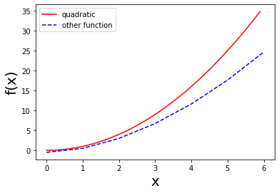
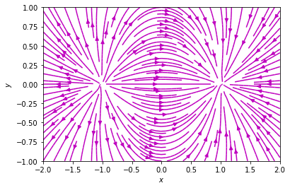
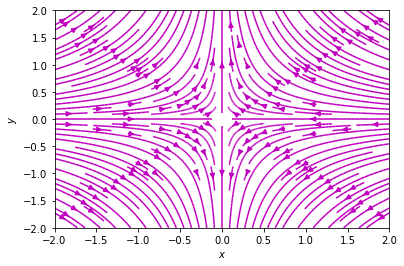

Python can run interactively (as in this Jupyter notebook/lab) or noninteractively through a script file (via command python xxx.py).
Python is a dynamically typed language, which means you don’t declare the type of variables at the beginning, and the variables get their type from their value. Eg. x = 0.5 creates a float variable.
Many functions can be obtained by importing standard library modules. Eg. the square root function sqrt can be obtained by import math and then be used as math.sqrt(x).
Some Pythonic expressions: x += 1 means x = x+1. Exchanging values of variables x, y = y, x.
Control Flow
Run code under conditions:
if (x !=0):print("x is nonzero")
Note that the indentation after the colon “:” is important.
Two types of loop (for loop is recommended in practice):
while (condition): ...
for i inrange(3): ...
range(n) gives the integers from 0 to n-1. range(m,n,i) gives the integers from m to n-1 in steps of i.
for ii inrange(0,10,2):print(ii, end =" ") # end = " " means after printing ii, we put a space at the end (no new lines)
0 2 4 6 8
Data Structures
Lists
A list is a container of elements (of any type), and the number of elements can grow. For example, zs = [5, 1+2j, -2.0] is a list. zs[0] is the first element and zs[-1] is the last one. We can change the element in the list, for example, by zs[1]=9, which will replace 1+2j in the original list. We can also introduce a new element at the end of the list, by the append() command. See the following example:
xs = []for i inrange(20): xs.append(0.1*i)print(xs) # there can be numerical errors
If we add two lists zs = xs + ys, we concatenate the lists xs and ys into zs. Similarly, xs = 4 * [0] simplies gives xs = [0,0,0,0].
Slicing is an important feature. xs[2:5] means we extract a smaller list consisting xs[2] up to xs[4] (exclude xs[5]). Further, we can use ws[m:n:i], which means we extract ws[m] up to but not include ws[n] where the index goes in steps of i.
Copy list: if we assign an old list xs to a new list ys, via ys = xs, then ys will just be another name for the old list. See the following example:
xs = [1,2,3]ys = xsys[0] =7print(xs) # see the values of the old list is modified
[7, 2, 3]
On the other hand, when you slice a list, you get a new list. Particularly, ys = xs[:] creates a new list ys, which is different from the old list xs. See the following example:
xs = [1,2,3]ys = xs[:]ys[0] =7print(xs)print(ys)
[1, 2, 3]
[7, 2, 3]
Tuples can be regarded as immutable lists, which means they can neither change nor grow. We use parentheses instead of square brackets for the tuples, xs = (1,2,3), or sometimes even without the parentheses, xs = 1,2,3. After it is created, we cannot change its values. If you type xs[0] = 3, you will get an error. You do have access to the elements in the tuples. Whey you type print(xs[0]), you will get 1.
Strings can be viewed as a sequence. For example, name = "Mary", then name[-1] will be the character y. (Either double or single quotation marks can be used.) Strings are also immutable. You can use + to concatenate two strings. A useful function tha|t acts on the strings is format(): it uses positional arguments, numbered starting from 0, within curly braces. See the following example
In the above example, the .10f after the colon means we format the first variable x as a float number with ten digits after the decimal point.
Dictionaries are also called associative arrays in computer science (or maps in C++). They are key-value pairs. For example, we can introduce htow = {1.4 : 30.1, 1.5 : 42.3, 1.6 : 48}. Here, 1.4, 1.5, and 1.6 are keys. 30.1, 42.3 and 48 are the corresponding values. One can access the values via the keys, via e.g. htow[1.5], which gives 42.3. Note that the keys and values can be strings, floats etc.
User-Defined Functions
In python, function are defined using the following code block, which sum from 1 up to some integer.
def sumofints(nmax): val =sum(range(1,nmax+1))return valsumofints(10)
55
Sometimes it is also useful to introduce default parameters in a function. For example, we can set the default nmax to be 10. When we omit the parameter, the function runs with its default parameters. See below:
def sumofints2(nmax =10): val =sum(range(1,nmax+1))return valsumofints2()
55
Another way to define a function is via lambda function. See the following example:
f =lambda x,y: x**2+ y**2# define a function f(x,y)f(3,4)
25
In python, function can be passed to other functions. For example, we can define a function that numerically calculate the derivative of a function. See the following example
g =lambda x: x**3# compute x cubedef der(f, x, h=0.01):return (f(x+h) - f(x))/h# Compute the derivative of x^3 at x=1. # The exact result is 3. print(der(g,1))print(der(g,1,1e-5)) # choose a smaller h
3.0301000000000133
3.000030000110953
Core-Python Idioms
List Comprehensions
We can replace the previous example that creates a list of the form 0.1*i for i runs from 0,1,… up to 19. This can be done via xs = [0.1*i for i in range(20)], this is called list comprehension. How do we double each elements in xs? Note that we cannot use 2*xs, because this simply concatenate two xs lists. The can be done in the following example:
xs = [0.1* i for i inrange(20)]ys = [2*x for x in xs]print(ys)
For-else You can follow the for loop by an else. This is counterituitive but can be very helpful. The way this works is that the for loop is run as usual: if no break is encountered during execution of the for block, then control proceeds to the else block. If a break is encountered during execution of the for block, then the else block is not run. See the following example.
def look_up_age(target,name_age):for name,age in name_age.items():if name==target: val = agebreakelse: val =Nonereturn valname_age = {"Alice":12, "Bob":14, "Sam":11}print(look_up_age("Sam", name_age))print(look_up_age("Jack", name_age))
11
None
Basic Plotting with matplotlib
The Python ecosystem gives us the option of visualizing relationships between numbers via matplotlib, a plotting library (i.e., not part of core Python) which can produce quality figures. Specifically, we use the matplotlib.pyplot module to produce figures.
import matplotlib.pyplot as plt # plt is the short name for matplotlib.pyplotdef plotex(cxs,cys,dxs,dys): plt.xlabel('x', fontsize=20) plt.ylabel('f(x)', fontsize=20) plt.plot(cxs, cys, 'r-', label='quadratic') plt.plot(dxs, dys, 'b--', label='other function') plt.legend() plt.show()cxs = [0.1*i for i inrange(60)]cys = [x**2for x in cxs]dxs = [i for i inrange(7)]dys = [x**1.8-0.5for x in dxs]plotex(cxs, cys, dxs, dys)

Project: Visualiznig Electric Fields
We shall use matplotlib to visualize a vector field, by drawing field lines for the electric field produced by several point charges.
Electric Field of a Distribution of Point Charges
Let us recall the Coulomb’s law: the force on a test charge \(Q\) located at point \(P\) (at position \(\boldsymbol{r}\)), coming from a single point charge \(q_0\) located at \(\boldsymbol{r}_0\) is given by:
where the Coulomb constant \(k = 1/(4\pi \epsilon_0)\) in SI units.
The electric field \(\boldsymbol{E}_0\) is the ratio of the force \(\boldsymbol{F}_0\) with the test charge \(Q\) in the limit \(Q\to 0\). In practice, this gives
If we have more than one point charge, we could apply the principle of superposition, by summing over the electric fields created by point charges \(q_0, q_1, \dots, q_{n-1}\)
Note that the electric field is a vector quantity: at any point in space it has a magniude and a direction. One way of visualizing vector fields consists of drawing field lines,namely imaginary curves that help us keep track of the direction of the field. More specifically, the tangent of a field line at a given point gives us the direction of the electric field at that point. Field lines do not cross; they start at positive charges (“sources”) and end at negative charges (“sinks”).
Plotting Field Line
We have two tasks:
We need to find the electric field (vector) at several points near the charges (Equation 1).
We need to plot field lines in such a way that we can physically interpret what is happening.
We shall only consider the problem with only two point charges of equal magnitude and opposite sign. We restrict ourselves to two dimensions.
Below is the python implementation, where we take the Coulomb constant \(k=1\) for simplicity. We start by importing numpy and matplotlib. We also import the square root function and the deepcopy() function, which can create a distinct list-of-lists.
The function makefield() takes in two liss, xs and ys, corresponding to the coordinates at which we wish to evaluate field. We also need to store the \(\boldsymbol{r}_i\) at which the point charges are located.
import numpy as npimport matplotlib.pyplot as pltfrom math import sqrtfrom copy import deepcopydef makefield(rlist, qtopos):''' This function computes the electric field vector (Ex, Ey) at different locations r=(x,y). Here, the inputs are: rlist = [[x1,y1],[x2,y2],...] for the locations at which we want to calculate the electric fields. qtopos = [[q1, (posx, posy)], [q2, (posx, posy)] ...] corresonding to locations r1 = (x1,y1), r2 = (x2,y2), ... '''# First, create an empty list Es = []for r in rlist:# loop over all locations at which the electric fields will be evaluated x,y = r# extract the x and y coordinate Ex =0 Ey =0# set initial electric field strength to zerofor q_pos in qtopos: q,pos = q_pos# loop over all point charge and position pairs: posx, posy = pos R = sqrt((x - posx)**2+ (y - posy)**2)# Calculate the distance Ex += q*(x - posx)/R**3 Ey += q*(y - posy)/R**3# Add up contribution to the electric field from each point charge Es.append(np.array([Ex,Ey])) # append the electric field np.array([Ex, Ey]) into the list Esreturn Es # return the list of electric fields at all locations in rlistdef plotfield(boxlx,boxly, n, m, qtopos= [[1,(-1,0)], [-1,(1,0)]]):''' plot the electric field in a region [-boxlx, boxlx] x [-boxly, boxly], with n x m grid points at which the electric field shall be evaluated. The default value for qtopos = [[1,(-1,0)],[-1,(1,0)]] '''# all possible x coordinates, from -boxl to boxl, with n points xlist = [-boxlx + i*2*boxlx/(n-1) for i inrange(n)]# all possible y coordinates ylist = [-boxly + i*2*boxly/(m-1) for i inrange(m)] rlist = [[x,y] for y in ylist for x in xlist]# rlist = [[x1,y1],[x2,y1],[x3,y1],...,# [x1,y2],[x2,y2],[x3,y2],...,# ...,# [x1,yn],[x2,yn],[x3,yn],...] Es = np.array(makefield(rlist,qtopos))# convert List of electric fieds into a 2d numpy array# Es= np.array([E11,E21,E31,...,# E12,E22,E32,...,# ...,# E1n,E2n,E3n,...])# here E11 means E(x=x1,y=y1) etc. xlist=np.array(xlist) # convert xlist from list to np.array(), which is required# in plt.streamplot() ylist=np.array(ylist) Exs=np.reshape(Es[:,0],(m,n))# Es[:,0] is a 1D numpy array# Es[:,0] = np.array([Ex11,Ex21,Ex31,...,# Ex12,Ex22,Ex32,...,# ...,# Ex1n,Ex2n,Ex3n,...])# here Ex11 means the x component Ex(x=x1,y=y1) etc.# Using np.reshape(Es[:,0], (dim1, dim2)), one can reshape the 1D # array Es[:,0] into a 2d array, of dim1 rows and dim2 columns. Eys=np.reshape(Es[:,1],(m,n)) plt.streamplot(xlist, ylist, Exs, Eys, density=1.5, color='m') plt.xlabel('$x$') plt.ylabel('$y$') plt.show()plotfield(boxlx =2, boxly =1,n =40, m =20)

Note that the plt.streamplot() is used to draw streamlines of a vector flow, one can see its documentation. Alternatively, you can type the following help() function to print out the usage of this function.
help(plt.streamplot)
Help on function streamplot in module matplotlib.pyplot:
streamplot(x, y, u, v, density=1, linewidth=None, color=None, cmap=None, norm=None, arrowsize=1, arrowstyle='-|>', minlength=0.1, transform=None, zorder=None, start_points=None, maxlength=4.0, integration_direction='both', *, data=None)
Draw streamlines of a vector flow.
Parameters
----------
x, y : 1D/2D arrays
Evenly spaced strictly increasing arrays to make a grid. If 2D, all
rows of *x* must be equal and all columns of *y* must be equal; i.e.,
they must be as if generated by ``np.meshgrid(x_1d, y_1d)``.
u, v : 2D arrays
*x* and *y*-velocities. The number of rows and columns must match
the length of *y* and *x*, respectively.
density : float or (float, float)
Controls the closeness of streamlines. When ``density = 1``, the domain
is divided into a 30x30 grid. *density* linearly scales this grid.
Each cell in the grid can have, at most, one traversing streamline.
For different densities in each direction, use a tuple
(density_x, density_y).
linewidth : float or 2D array
The width of the stream lines. With a 2D array the line width can be
varied across the grid. The array must have the same shape as *u*
and *v*.
color : color or 2D array
The streamline color. If given an array, its values are converted to
colors using *cmap* and *norm*. The array must have the same shape
as *u* and *v*.
cmap : `~matplotlib.colors.Colormap`
Colormap used to plot streamlines and arrows. This is only used if
*color* is an array.
norm : `~matplotlib.colors.Normalize`
Normalize object used to scale luminance data to 0, 1. If ``None``,
stretch (min, max) to (0, 1). This is only used if *color* is an array.
arrowsize : float
Scaling factor for the arrow size.
arrowstyle : str
Arrow style specification.
See `~matplotlib.patches.FancyArrowPatch`.
minlength : float
Minimum length of streamline in axes coordinates.
start_points : Nx2 array
Coordinates of starting points for the streamlines in data coordinates
(the same coordinates as the *x* and *y* arrays).
zorder : int
The zorder of the stream lines and arrows.
Artists with lower zorder values are drawn first.
maxlength : float
Maximum length of streamline in axes coordinates.
integration_direction : {'forward', 'backward', 'both'}, default: 'both'
Integrate the streamline in forward, backward or both directions.
data : indexable object, optional
If given, the following parameters also accept a string ``s``, which is
interpreted as ``data[s]`` (unless this raises an exception):
*x*, *y*, *u*, *v*, *start_points*
Returns
-------
StreamplotSet
Container object with attributes
- ``lines``: `.LineCollection` of streamlines
- ``arrows``: `.PatchCollection` containing `.FancyArrowPatch`
objects representing the arrows half-way along stream lines.
This container will probably change in the future to allow changes
to the colormap, alpha, etc. for both lines and arrows, but these
changes should be backward compatible.
One can see that plt.streamplot() expects inputs x,y,u,v as 1D or 2D (numpy) arrays. That’s the reason we need to import numpy and convert Lists to numpy arrays. In the following, we will brifely remind you some numpy idioms. More functions of numpy arrays will be introduced later in this course. You can also visit Numpy website to learn by yourself.
Numpy idioms
Numpy arrays are similar to python list. Python lists are often homogeneous, which means they contain elements of only one type. Thus, it makes more sense to carry out tasks using a homogenous, fixed-length container. Numpy arrays are exactly such objects that do this job: it is fast and space-efficient. It also allows us to avoid having to write loops, via so-called vectorization. The standard way of importing numpy arrays into a python program is via
import numpy as np
In fact, lists are similar to 1D arrays in numpy, and can be regarded as vectors. Lists of lists are similar to 2D arrays in numpy, and they can be regarded as matrices.
One can even convert between the two easily, see below.
Below we shall see the great acceleration when we compute elementwise multiplication using numpy arrays.
def elementwise_multiplication(xlist,ylisg):return [x*y for x,y inzip(xlist,ylist)]# create a random 1D array of length 100len_n =1000000xs = np.random.rand(len_n)ys = np.random.rand(len_n)# xlist, ylist are the corresponding lists for xs and ysxlist =list(xs)ylist =list(ys)# perform elementwise multiplication with lists# One can use Jupyter's built-in magic '%time' to# measure the running time for a single line of code.print("Using python lists:")%time zlist = elementwise_multiplication(xlist,ylist)print("Using numpy array with vectorization:")%time zs = xs*ys
Using python lists:
CPU times: total: 62.5 ms
Wall time: 111 ms
Using numpy array with vectorization:
CPU times: total: 0 ns
Wall time: 3.01 ms
Slicing arrays Consider a 2D array A. One can access its first row via A[0,:], and its first column via A[:,0]. Note that the row or column indices run from zero.
A = np.array([[1,2,3],[4,5,6],[7,8,9]])print(A[0,:])print(A[:,0])
[1 2 3]
[1 4 7]
Reshape arrays Sometimes it is very useful to reshape numpy arrays. For example, we can reshape a \(3 \times 2\) 2D array into a 1D array of length \(6\), and vice versa. See the following example.
In the above example, when we reshape the 1D array into a 2D array, the column (second) indices increase faster than the row (first) indices. This is known as the C-type ordering, which in general requires the last index in an ndarray changes the fastest. (On the contrary, in other programming languages, such as Matlab and Fortran, the first index changes the fastest. This is known as the Fortran-type ordering.)
Homework Problems
Please submit your codes in a jupyter notebook *.ipynb.
Iterate through a list xs in reverse, printing out both the index (which will be decreasing) and each element itself.
Try to reproduce the electric field plot shown below with 4 point charges, at (1,0), (-1,0), (0,1), (0,-1). (You should first determine the sign of the charges, assusming they all have the same magnitude.) 